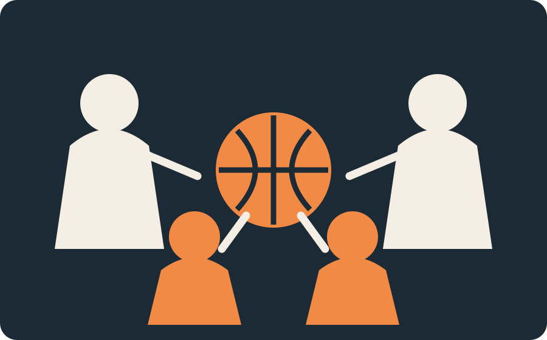

Un accueil sans jugement
Les débutants sont les bienvenus. Les règles et le déroulement sont expliqués avant les activités.
Une association fictive pensée pour rendre les sports urbains plus accessibles et faire du terrain un lieu de rencontre entre habitants, pratiquants et curieux.
Créer des occasions concrètes de pratiquer les sports urbains dans un cadre accueillant, convivial et organisé. Nous souhaitons faciliter la première participation, encourager la progression et valoriser l'engagement collectif.
Notre projet s'appuie sur trois principes : accessibilité, respect et partage.

Des engagements simples qui doivent se traduire dans l'organisation et l'accueil.
Les débutants sont les bienvenus. Les règles et le déroulement sont expliqués avant les activités.
Le respect des personnes, des équipes et des installations est une condition de participation.
Nous encourageons la mixité des profils, des âges et des niveaux, avec des formats adaptés.
Joueurs, bénévoles, structures locales et partenaires peuvent contribuer au projet.